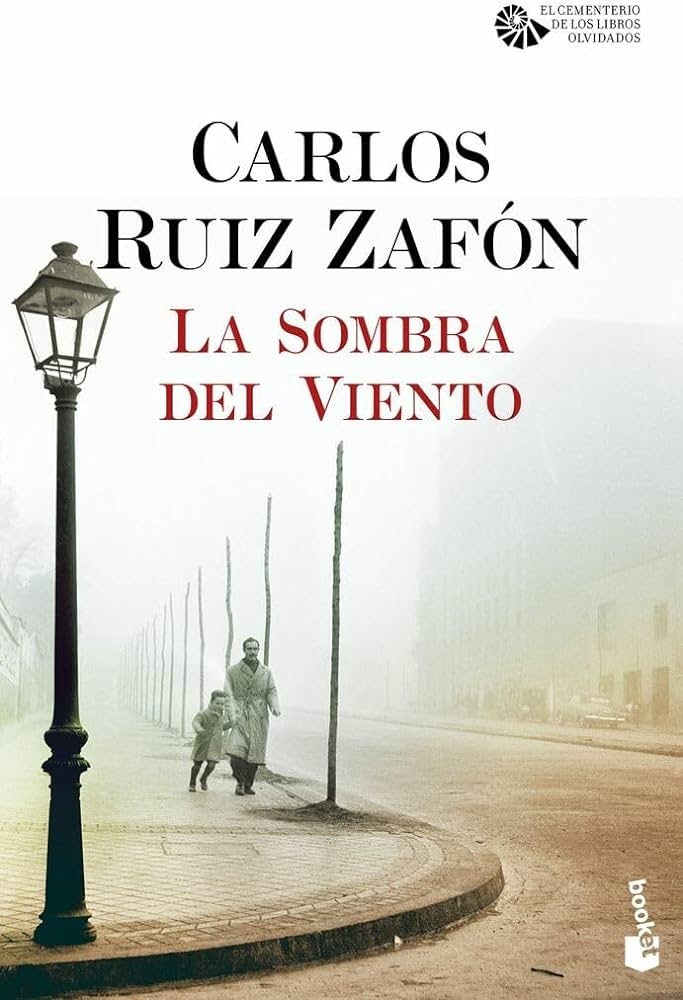

La sombra del viento
Género: Novela histórica.
Autor: Carlos Ruiz Zafón
Año de publicación: 2001
Link de compra: AMAZON
Género: Novela histórica.
Autor: Carlos Ruiz Zafón
Año de publicación: 2001
Link de compra: AMAZON
En "La sombra del viento" de Carlos Ruiz Zafón, nos sumergimos en el fascinante laberinto de los libros y el misterioso Barrio Gótico de Barcelona. La historia sigue a Daniel Sempere, quien, tras descubrir un libro en el Cementerio de los Libros Olvidados, se ve envuelto en un intrigante juego de secretos y tragedias.
Zafón teje una trama magistral donde amor, literatura y oscuros secretos convergen. Desde los años de posguerra hasta la década de 1950, la narrativa nos lleva por callejones empedrados y bibliotecas olvidadas, revelando una red de personajes memorables y una conspiración literaria que desafía el tiempo. Cada página es una exploración de la pasión por los libros y una inmersión en un mundo donde la realidad y la ficción se entrelazan.
"La sombra del viento" es un viaje literario que cautiva con su prosa rica y su intrincada trama. Zafón crea un universo donde los libros tienen alma y los lectores se convierten en cazadores de historias perdidas. Esta obra maestra, impregnada de misterio y poesía, invita a los lectores a perderse en sus páginas y descubrir el poder eterno de las palabras.